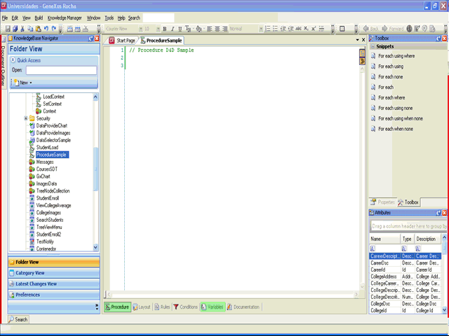
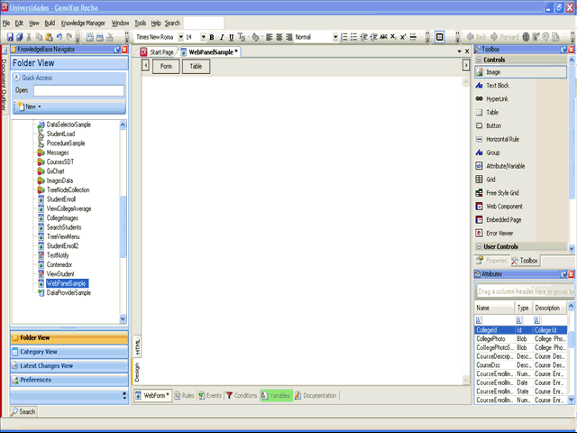

Several drag and drop options for performing several tasks have been added to the IDE in order to make developers' life easier.
The basic sequence involved in drag-and-drop operations is as follows:
-
Press, and hold down, the left mouse button to "grab" the object,
-
"Drag" the object to the desired location,
-
"Drop" the object by releasing the button.
The appropriate behavior depends on the context of the drag-and-drop operation and the target drop object. You can check the available drop operations using the right mouse button or adding the SHIFT key before ending the drop action.
Below are some use cases of the IDE drag and drop feature, try them!
Text editors
-
Using the Snippets Toolbox, you can drag any of the available ones and drop them on the editors or use the related shortcut!.
-
Select any object from the Folder View, drop it on any text editor and the name of the object will appear there.
-
if you select a list of attributes, a For each containing them will be created.
-
if you select a data selector, a For each using dataselector(parms) is created.
Remember to use the SHIFT key when dropping the object if you want to see the available options for this context.

Web Form
-
Using the Control Toolbox, any control can be dragged and dropped on the Form.
-
Select a list of attributes from the Attributes Toolbox and drop them on a Web Form; a grid will be created.
-
Select an attribute and drop it in the same way on a Web Form; an edit box will be created.
-
In the Folder View, locate a Web Component and drop it on the Web Form; you will get the web component control in the form.
-
From within the Object, you can drag Variables from the Variables section to the form.
-
Locate an SDT in the Folder View and drop it on a Web Form and a dialog will be opened so that you can select the fields you want to show. A grid will be created in the Web Form with these fields as columns.
If you drag using the right mouse button or the SHIFT key, you can choose from a list of options like "as Attribute", "as Table", "as grid" or as "free style grid", as shown in the following sample.

Export
-
When using the Export dialog, you can select and drag from the Folder View the desired objects to export to the Export Objects dialog.
Data Providers
-
Select an SDT from the Folder View and drop it in the data provider source section; you will get the associated snippet code to be completed and the data provider output will be automatically assigned to the selected SDT.
Model tree
-
Select an object in the Folder View and drag it to a Folder; the object will be moved to the new location. You can perform a copy operation within the same folder by pressing the Ctrl key while dragging the object.
Structured Data Type editor
-
Select a Transaction from the Folder View and drag it to the SDT editor. The Transaction structure will be added to the SDT structure already defined.
|